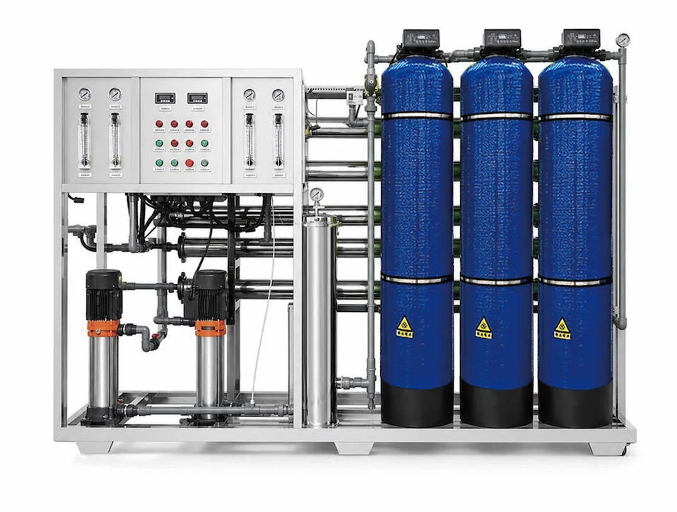

Large Industrial Reverse Osmosis Water Treatment Equipment 3-100 TPH
Large Industrial Reverse Osmosis Water Treatment Equipment 3-100 TPH — Pure Water Flow: 3-100 t/h.
Send Inquiry
Three-Tank Pretreatment Integrated Skid RO Equipment 1000-3000 L/h is reviewed as a skid-mounted RO system for project buyers. Engineering confirmation should cover feed-water analysis, target output, recovery rate, pretreatment design, pump and membrane selection, control panel logic and skid or export packing. Key specifications include Pure Water Flow: 1000-3000 L/h.
Three-Tank Pretreatment Integrated Skid RO Equipment 1000-3000 L/h is best compared as a skid-mounted RO system rather than only by flow rate. Confirm pretreatment tank media, automatic valve control, feed-water analysis, RO membrane configuration, frame dimensions, site access and service-parts planning.
For Three-Tank Pretreatment Integrated Skid RO Equipment 1000-3000 L/h, industrial projects need more than a product name. The useful buying information is feed-water quality, treated-water target, operating hours, pretreatment tanks, pump selection, membrane array, control logic, protection functions and skid or container packing.
| Item | Specification |
|---|---|
| Product Type | Three-Tank Pretreatment Integrated Skid RO Equipment 1000-3000 L/h |
| Operating Mode | Full automatic intelligent operation, with manual service mode according to project needs |
| Treatment Process | Automatic sand tank + automatic carbon tank + automatic softening tank + precision filter + reverse osmosis |
| Pure Water Flow | 1000-3000 L/h |
| Feed Water | Tap water and groundwater |
| Feed pressure | 0.1-0.4 MPa |
| Project customization | Project layout and controls can be adjusted after water-source review |
| Application | Commercial drinking-water and water-treatment projects |
| OEM/ODM | Configuration is confirmed by project specification |
| MOQ | Confirmed by capacity, configuration and OEM level |
Integrated skid RO system with automatic sand and carbon tanks, precision filtration and 1000-3000 L/h purified water output for OEM projects.
| Treatment Process | Automatic sand tank + automatic carbon tank + automatic softening tank + precision filter + reverse osmosis |
|---|---|
| Feed Water | Tap water and groundwater |
| Feed pressure | 0.1-0.4 MPa |
| Project customization | Project layout and controls can be adjusted after water-source review |
Automatic sand tank + automatic carbon tank + automatic softening tank + precision filter + reverse osmosis
1000-3000 L/h
0.1-0.4 MPa
Project layout and controls can be adjusted after water-source review
Large Industrial Reverse Osmosis Water Treatment Equipment 3-100 TPH — Pure Water Flow: 3-100 t/h.
Send Inquiry
Small and Medium Seawater Desalination RO Equipment — Nitrate removal rate: ≥90%.
Send Inquiry
20-inch Commercial RO Water Purifier 800G/1200G/1600G/2000G — Filtration Stages: Five-stage filtration with PP sediment, pre-carbon, RO membrane, post carbon or custom cartridge sequence.
Send InquiryYuchen Water three-tank pretreatment integrated skid RO equipment is designed for commercial and light industrial B2B projects using tap water or groundwater. The system integrates an automatic sand tank, automatic carbon tank, precision filter and reverse osmosis unit on one frame, producing 1000-3000 L/h purified water with 0.1-0.4 MPa feed pressure. Appearance, process flow, configuration and functions can be customized according to source-water analysis and buyer requirements.